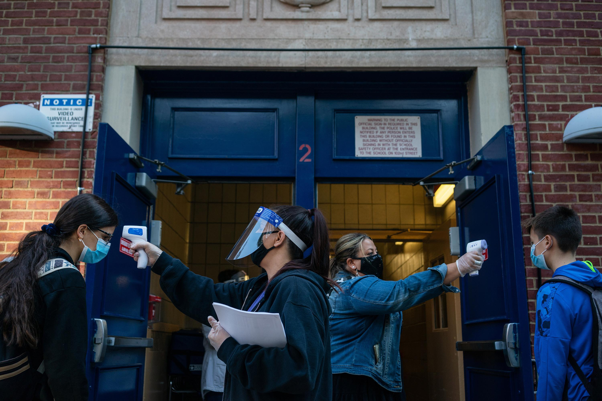
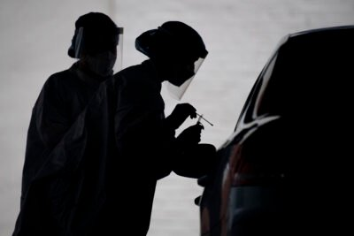

My Kids’ School Closed Again.So I Started Calling Experts.
ProPublica is a nonprofit newsroom that investigates abuses of power.Sign up to receive our biggest stories as soon as they’re published.
Update, April 5, 2021: New York City Mayor Bill de Blasio announced on Monday that he's ending the COVID-19 school closure rule that experts told ProPublica did not make sense.He said the city will announce a new policy in the coming days.
Here is the minute I finally lost it: Sunday, March 21, at 9:34 p.m.
That’s when my wife and I got an email saying our kids’ New York City public elementary school would be closed yet again.Testing had found two positive COVID-19 cases among nearly 700 students and staff.
It was the fifth time the school had closed since New York reopened schools in the fall.Each time has been the same: First, we get an email that testing has turned up one case.A few days later, we get a second email saying testing has found a second case and the whole school will be closed for a day while health officials investigate.
And then, every time, comes the coup de grâce form letter: 'Subject: 10 Day Bldg Closure.'Per New York City policy, two unlinked cases result in the building being shuttered for 10 consecutive days.
The first time it happened, I didn’t wonder about the rationale.Everything has been crazy during COVID-19.And despite more than 25,000 deaths, New York City, with the country’s largest public school system by far, was way ahead of most other cities in opening up schools.
Then it happened again in January, again in February and
twice in March.Let me be honest here: Something in me snapped with the last one.Our kids, a second grader and a fourth grader, had done five in-person school days since the previous 10-day shutdown and 19 total since the New Year.Everyone in our apartment was struggling.
I’m lucky enough to be able to work from home.But I couldn’t concentrate.Our kids needed help.And I just could not get my mind off the rule, which mandates closure for two cases regardless of the school’s size or if, as has happened in my school, the two cases are kids grades apart who never cross paths.What, I wondered, do people who’ve studied schools and COVID-19 think of that?
So amid meltdowns, moping (mostly mine) and minimal learning, I started reaching out to doctors and scientists suggested by my colleagues who cover COVID-19.I asked three questions: What do they think of the rule?Is there a better way?And how do the vast racial disparities in COVID-19’s impact — and in families’ willingness to send their children back into school buildings — inform their thinking about where to draw the lines?
I ultimately got the perspectives of 10 epidemiologists and physicians.Nine said the two-case rule doesn’t make sense.One said that the rule could be effective if the goal is truly zero cases, but at a cost.I also reached out to the city itself, which has said for nearly two months that it’s reconsidering the policy, as well as the teachers union, which told me it continues to support it.
Beyond the rule, I ended up getting a sense of the chasm that exists between what scientists have concluded makes sense — in short, open schools with protections — and what communities are still doing in many parts of the country.New York may have a quirky rule, but the majority of children in California still do not have access to in-school class.
So, what do scientists think of the two-case rule?'Oh my goodness.Oh my goodness.Wow.New York City schools are making a mistake,' said Dr. Elissa Schechter-Perkins, an epidemiologist and infectious diseases doctor at Boston University School of Medicine.Schechter-Perkins and her colleagues recently garnered epidemiological fame after finding that schools can reduce spacing in classrooms from 6 feet to 3 feet, a conclusion that caused the Centers for Disease Control and Prevention to change its guidelines.
What really surprised Schechter-Perkins and others were the specifics of the rule, which you can read yourself: When the city’s surveillance testing — 20% of a school’s population every week — finds two or more positive cases that are connected, just the affected classrooms are shut and close contacts are told to quarantine.But if the cases can’t be traced or connected, then the entire school building will be shut for 10 days.
Put another way: A school
won’t be shut down if there is evidence of some spread, but it
will be closed if there is no evidence of in-school transmission.
The city doesn’t publish figures on how many of its roughly 1,800 public schools have been closed, but its website shows a total of 2,358 building closures this school year as of Thursday.
Other experts had similar reactions.'That’s crazy.That’s nuts,' said Dr. Benjamin Linas, another epidemiology professor at Boston University School of Medicine.'It doesn’t really make sense,' said Dr. Leana Wen, a public health professor at George Washington University who served as Baltimore’s health commissioner.'It’s not evidence driven,' said Eyal Oren, an epidemiologist at the San Diego State University School of Health.
They were almost all, it should be noted, talking to me while dealing with school-age kids at home too.
The vehemence of the experts I spoke with surprised me, but the substance of what they said did not.The evidence is piling up both that schools can safely reopen when there are proper protections and that the collective costs of not doing so are enormous.As the CDC recently summed it up, 'In-person learning in schools has not been associated with substantial community transmission.'
As that consensus has emerged, New York has faced increasing criticism over the rule — Chalkbeat has had particularly good coverage — and Mayor Bill de Blasio himself has said the city is reviewing it.'We need to improve our ability to get it exactly right,' he told WNYC on Feb.5.
That was seven weeks and more than a thousand closures ago.In the meantime, the city has begun to open — and shut — middle schools and high schools.After I reached out to the mayor’s office and the city’s Department of Education about all of it, I got a statement from the department reiterating that the city is reconsidering the rule:
'We’ve been guided by a serious and cautious approach to health and safety every step of the way and have made adjustments over the course of the pandemic as the virus has evolved.With high schools now reopened and recent changes to CDC guidance regarding social distancing, we are carefully reevaluating the two-case closure rule so that even more students can safely benefit from high-quality, uninterrupted in-person learning.'
The two-case rule dates back to the end of the summer when New York was moving to be the first major city to reopen its schools and the city’s teachers union was threatening to strike.City health officials reportedly objected to having the rule, saying it would result in unnecessary closures.(The mayor’s office declined to comment about that.)
But the United Federation of Teachers has remained supportive of the rule.'When you hear we’re closing many schools.That’s positive,' union president Michael Mulgrew reportedly said at an assembly in January.'Doctors have said if you do everything else you can keep them open but I said no.'
When I asked the union for its current stance, it responded with a statement reiterating its support for the rule:
'New York City was the first major urban school system to re-open during the pandemic, thanks in large part to the UFT’s insistence on protective measures that have made public schools the safest places in the city.While there is some medical opinion that rigorous mask-wearing and other protective measures are enough, it is the position of the UFT that, in addition, extensive testing and the resultant temporary closures are still needed to keep children, their families and the school staff safe.'
After New York City, with about 1 million students in its system, took the leap last fall and reopened schools, most families kept their kids at home.A disproportionate percentage of families who have chosen to return, like mine, have been white.
The majority of students in the city’s public schools aren’t white, and with the pandemic hitting many Black, Hispanic and Asian neighborhoods especially hard, families from those communities have been less likely to opt for in-school instruction.
One of the experts I spoke to about that was Dr. Uché Blackstock, a former professor at New York University, who now runs a firm focused on addressing racial inequities in health care.
Blackstock said she thinks it’s critical that kids get back in the classroom.'Keeping schools open is important for all of our children,' she said, adding that schools and cities need to earn families’ trust to get kids back in.Blackstock said the two-case rule is counterproductive on that front.'People are already worried, justifiably, about bringing kids back to school.When we’re closing schools more, it’s causing more worry, more than there should be based on the evidence.'
I didn’t know it before I called, but Blackstock has two kids in a New York City public elementary school, which, it turns out, has been shut down twice.'That rule drives me crazy,' she told me.'It’s ridiculous.Obviously ridiculous.All I can say is we should use an evidence-based science and equity lens.'
So as variants spread and the country faces the possibility of another surge, what did experts tell me New York should do to stop school outbreaks?
They said it looks a lot like what the city is already doing: testing, mitigation like masks and ventilation, and lots of vaccinations for staff.Indeed, the city conducted its own study and found few positive cases at school and even fewer cases of in-school transmission.
Of course, we don’t know what role the rule has played in that, but one thing the experts emphasized to me is that it’s inefficient.'I appreciate and understand the abundance of caution they’re using in New York,' said Wen, the former Baltimore health commissioner.'My question is: Is there a way around it with a solution that is more practical and has lower costs?'
One idea that occurred to her: 'Instead of closing down, if there’s one case, they could rapidly test every child in the pod immediately.It would tell you if you have an outbreak.'
Dr. Andrea Ciaranello, an infectious disease specialist at Massachusetts General Hospital, gave me a sense of how schools in her state have been dealing with positive cases when they turn up.She’s been advising school districts around Massachusetts, which has started particularly aggressive testing.The state is paying for schools to test all students and staff weekly.
The vast majority of positive cases, she explained, get tracked to transmission outside the school.'We’ve had a couple of cases of in-school transmission,' Ciaranello said.'We investigate, sometimes close the school for a day and find, say, two people who were unmasked for a lengthy period of time together.'
As I was wrapping up what I came to think of as my reporting therapy, I ended up speaking to one epidemiologist who was less critical of the two-case rule.
Justin Lessler is a professor at Johns Hopkins Bloomberg School of Public Health.He co-authored a new study that found in-school classes without protections can lead to spread but that the 'risk can be controlled by in-school mitigation measures.'
Lessler said he understands New York’s approach.'It’s reasonable in that it’s effective,' Lessler said.'If your goal is to keep school cases at near zero, and you’re willing to incur those costs, it’s not crazy.'
But when I asked Lessler what he would do if he were in charge, he immediately offered: 'Keep K through 5 in school even when there’s high community transmission.You do mitigation and the full Harry Potter.'I haven’t read the series, so he explained that he means strict podding: 'You stay in your group.'
One problem with the two-case rule, Lessler said, is 'it’s inconsistent with the city’s overall strategy.Why do schools — a low-risk population, particularly with teachers vaccinated — have a zero transmission policy when the bar and gym across the street doesn’t have anything like that?'
The deeper issue, Lessler told me, isn’t scientific, it’s about a still rumbling and too often unacknowledged argument about what the goal is: Is it to crush all cases, in school and society, or are we willing to live with
some risk to benefit our community?'Depending on your goal, New York’s rule is either completely reasonable or completely insane.'
Posted On: 2021-04-02T00:00:00
Posted By: Eric Umansky


Content Date: 2021-04-02
Download Date: 2021-05-13
Document ID: L0C04BZYU